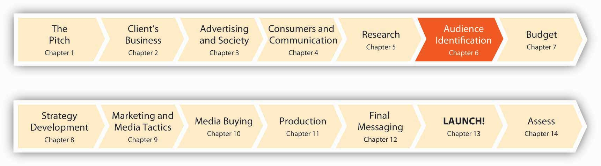

Figure 6.1 Nine Months to Launch!
Good advertising is all about hitting customers where they live. But before you can craft a killer message to send, you have to know what address to send it to. Here’s a profound idea: people are different. A message that turns one person on may leave another cold. And, of course, not everybody’s likely to be interested in any idea, product, or service your client wants to sell (OK, maybe eternal youth…).
Before an advertiser can decide what a campaign should say, the advertiser needs to devote a lot of thought to identifying the target of the message. Target marketingThe process of identifying the types of people who are most likely to want your product and then tailoring your efforts to satisfy their unique needs. is the process of identifying the types of people who are most likely to want your product and then tailoring your efforts to satisfy their unique needs. We do this when we use the STP (Segmenting, Targeting, Positioning)Process that 1) segments or subdivides the population to help you think about who are and are not the potential customers for your product and the potential audience of the advertising; 2) targets or picks the segment(s) for the campaign that will be the focus of the advertising; and 3) positions or determines how to think about the relationship between your product and the customer/audience, with the purpose of distinguishing your product from the competition. process, which consists of these three steps:
In short, STP gives you a framework for understanding: Who are your customers? How many customers are there? Where do they live? How do they spend their time? Why do they buy?
“The key turning point of this whole thing was when we started thinking about explorers and addicts and junkies.”
—Russell Stevens
“Really, all research and planning is telling a good story.”
—Account Planner Michelle Rowley
Figure 6.2

Michelle Rowley is one of the main planners in charge of articulating the characteristics of the consumer and of the marketplace. She works in what SS+K calls the “Asymmetric Intelligence Unit,” or the research and planning group.
One of the primary jobs of the account planner is to develop an empathic understanding of the target consumer, to get under their skin and understand their rational and sometimes irrational attractions to brands. This task comes naturally to Michelle, who describes herself as a “failed actor” who fell into her job—and then fell in love with it. Michelle and her colleagues need to identify the most relevant audience for the msnbc.com branding message, get “under their skin,” and then figure out how to align their client with what these viewers want. That’s the segmenting, targeting, and positioning process in a nutshell.
Michelle Rowley
(click to see video)Watch as Michelle Rowley explains her role in the agency and in the campaign process.